Celou noc v peci
Písek, sodu a vápno tavíme přes noc. Ráno je sklovina hustá a lesklá jako med.
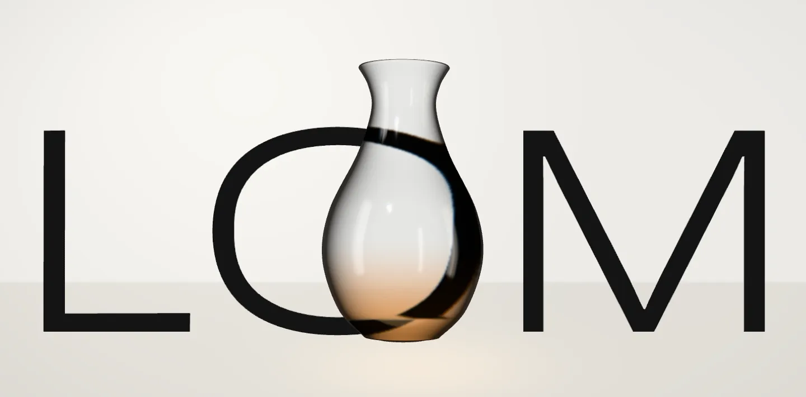
01 · Foukané sklo z Jizerských hor
Jizerka · Kořenov
02 · Malá huť na Jizerce
Každý kus foukáme z jedné kapky žhavého skla a jednoho nádechu. Proto žádné dva nejsou stejné.
Hoří od září do května, v létě dílna odpočívá.
Foukáme ve dvou, Klára a Tomáš, na Jizerce od roku 2011.
Každý tvar vznikne v malé sérii a znovu už ho neuděláme.
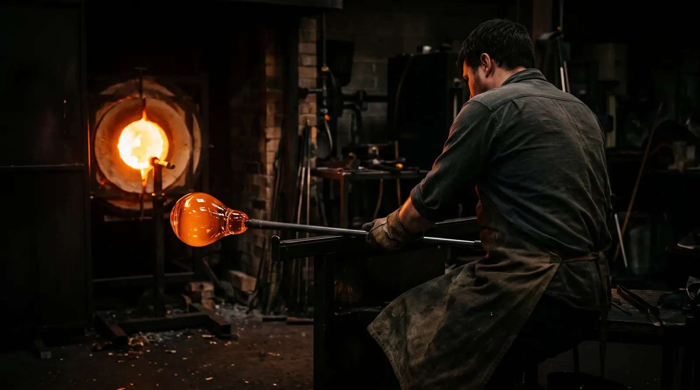
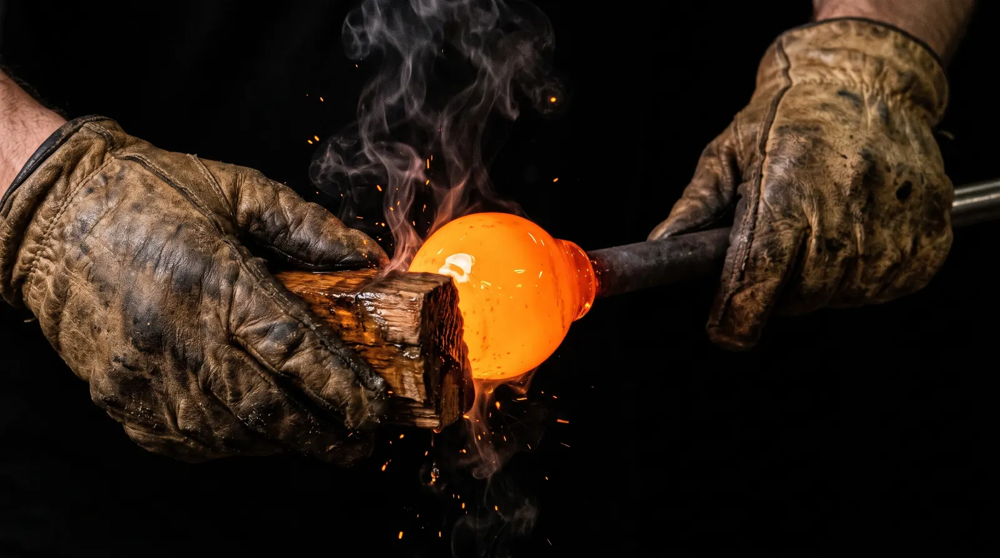
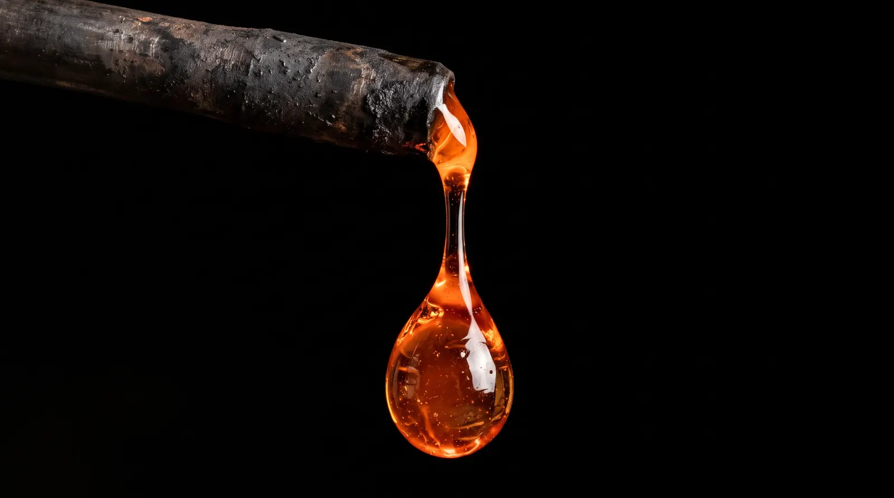
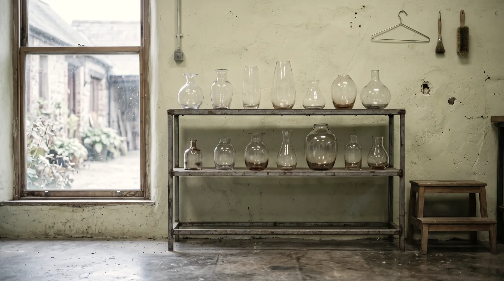
1 150°C
03 · Z písku a ohně
Písek, sodu a vápno tavíme přes noc. Ráno je sklovina hustá a lesklá jako med.
Na konec píšťaly nabereme kapku skla a jedním dlouhým nádechem z ní vznikne bublina.
Bublině dáváme tvar dřevem, kleštěmi a vlastní rukou. Na to je asi minuta, pak sklo musí zpátky do pece.
Hotový kus chladne v peci celou noc. Kdyby vychladl rychle, praskl by.
04 · Kolekce
Každý kus je originál, ten váš se od fotky bude trochu lišit. Posíláme po celé republice, pečlivě zabalené.
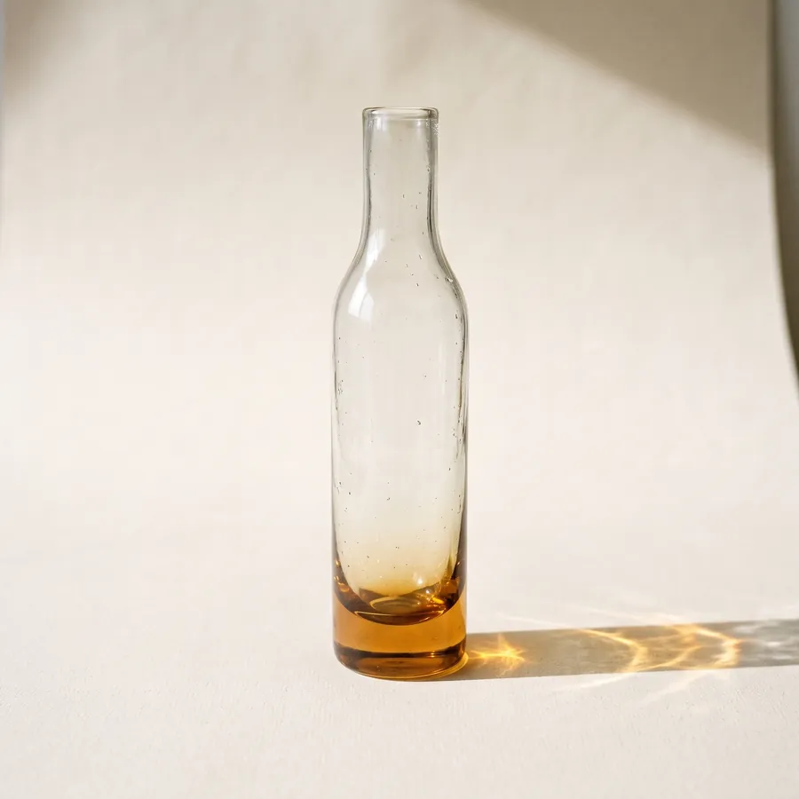
2 490 Kč
Vysoká a štíhlá, pro jednu větev nebo tři tulipány.
Chci tento kus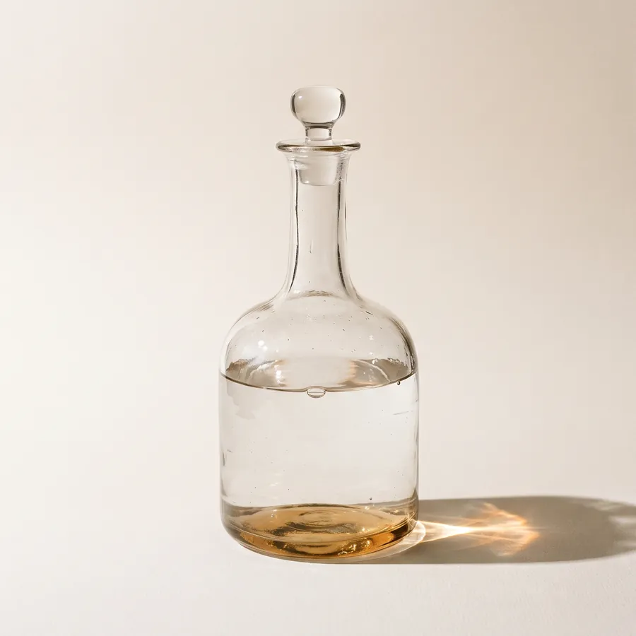
1 890 Kč
Litr vody nebo vína, zátka je foukaná zvlášť.
Chci tento kus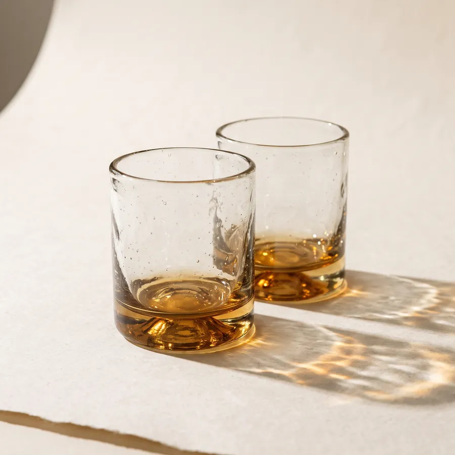
1 290 Kč
Těžké dno, dobře padnou do ruky.
Chci tento kus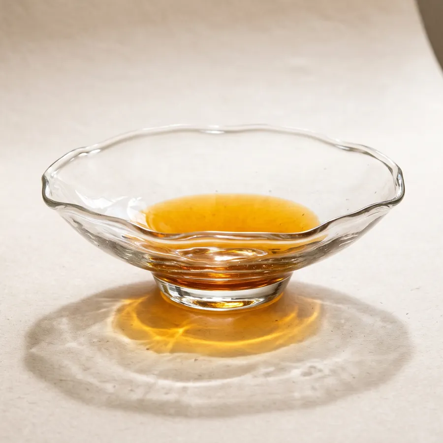
2 190 Kč
Na ovoce, na stůl, nebo jen tak na světlo.
Chci tento kus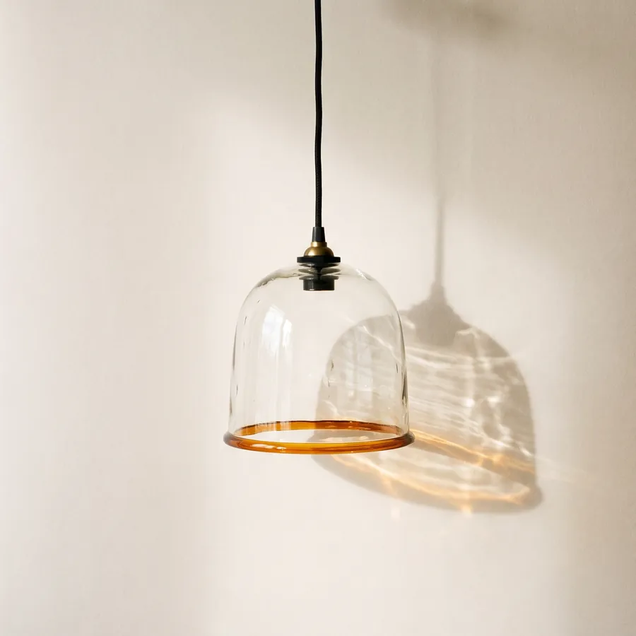
4 900 Kč
Závěsné světlo nad stůl, kabel v délce podle vás.
Chci tento kus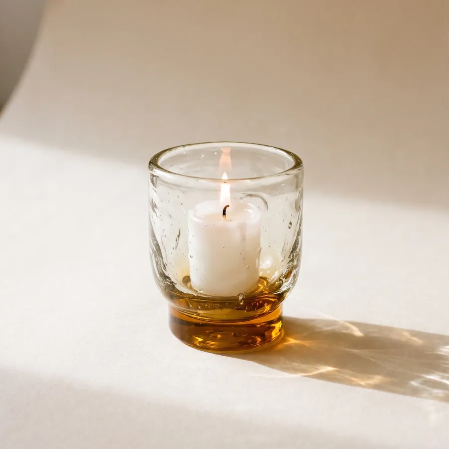
690 Kč
Malý a těžký, svíčka v něm nikdy nespadne.
Chci tento kus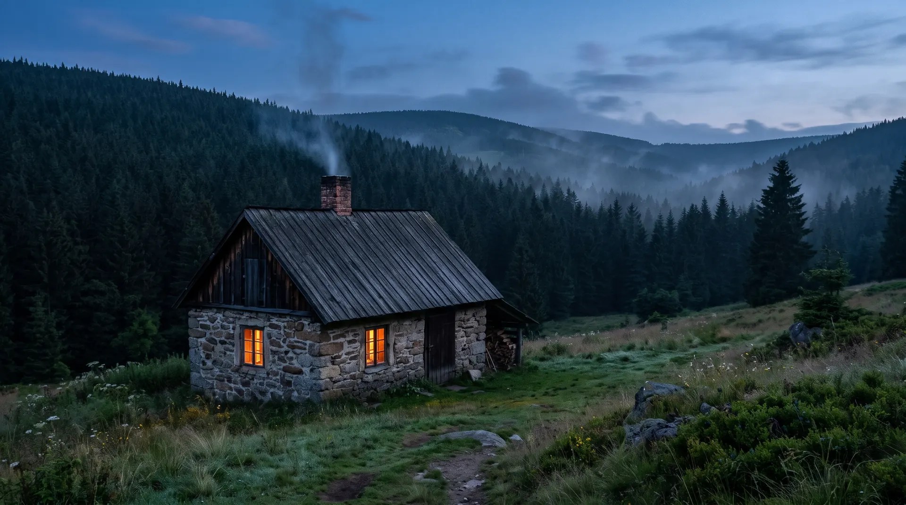
05 · Návštěva dílny
Prohlídka je každou sobotu v 10:00 a ve 14:00. Trvá hodinu, stojí 150 Kč a na konci si můžete sami zkusit foukat.
Vyberte termín06 · Na zakázku
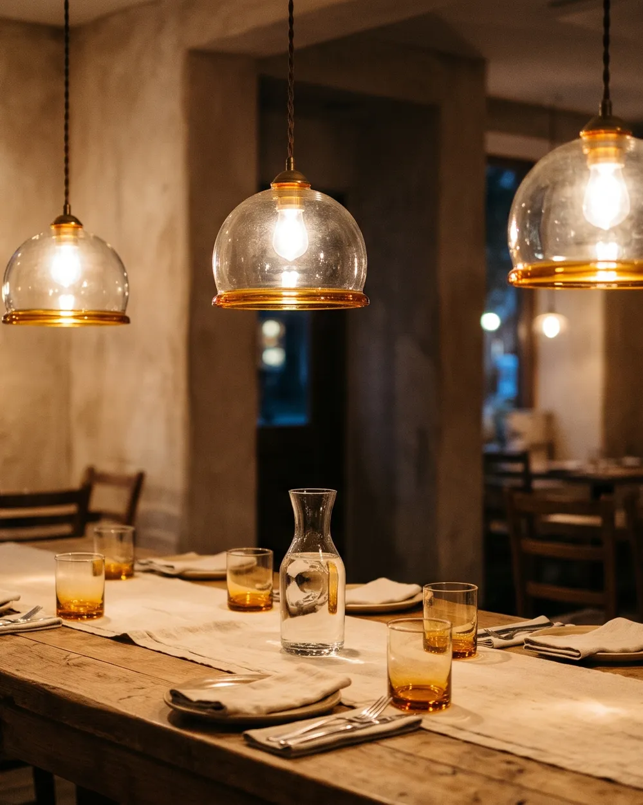
Navrhneme je s vámi a vyfoukáme tolik kusů, kolik potřebujete.
Barvu skla i délku kabelu přizpůsobíme vašemu prostoru.
Malá série s vaším logem vybroušeným do dna.